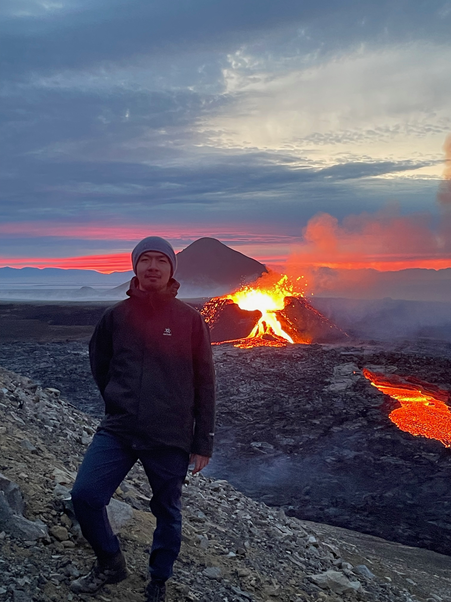
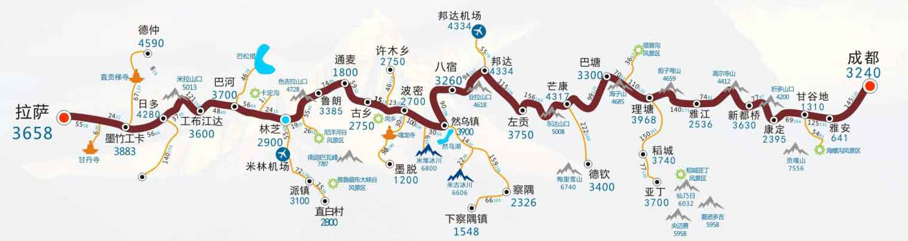

|  |
PhD
|
I am a PhD student in statistics at Machine Learning group, Centrum Wiskunde & Informatica (CWI), the national research institute for mathematics and computer science in the Netherlands, under the guidance of Prof. dr. Peter Grünwald.
Previously, I obtained a Master of Science in Computational Biology and Bioinformatics at ETH Zürich. Before that, I completed a Bachelor of Science degree in Applied Biology with Biotechnology at The Hong Kong Polytechnic University (PolyU). I also participated in an exchange program at the University of Waterloo back in 2017.
[2025.01] Created my profile page with jemdoc and migrate the blog
[2024.12] I started my PhD at Amsterdam!
How to pronounce my name: Google translate
I like bike packing, especially in long distance. In 2016, I cycled from Chengdu to Lhasa in about 24 days (~ 2000 km/1242 mi).
I am learning how to operate drones to get some nice pictures on the road!